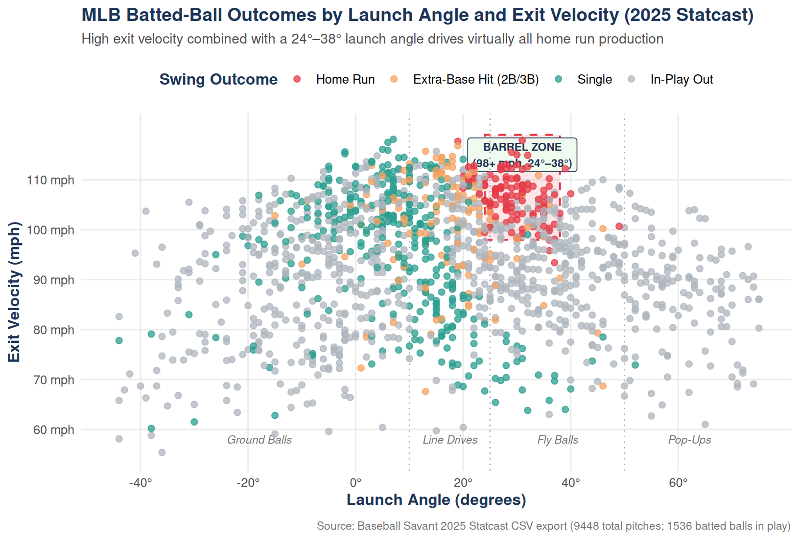
⚾ Introduction & Project Plans
Modern Major League Baseball analytics has been transformed by Hawk-Eye optical tracking and Statcast data provided through Baseball Savant. Every pitch and swing in an MLB ballpark is measured at high resolution, capturing both how a pitcher delivers the ball and how the batter’s swing interacts with it at contact. The goal of this project is to analyze pitch-by-pitch Statcast tracking data to understand how swing mechanics and pitch characteristics jointly determine batted-ball outcomes.
In this project, I plan to examine how batter swing decisions and contact quality translate into offensive production—specifically distinguishing between outs, singles, extra-base hits (doubles and triples), and home runs. By combining pitch-level variables with swing-tracking metrics, I will explore which combinations of bat speed, launch angle, and exit velocity consistently produce high-value outcomes (“barrels”) and how different pitch types disrupt a hitter’s ability to square up the baseball.
ImportantCore Research Question
How do bat speed and pitch type interact to shape a hitter’s exit velocity and launch angle, and what combinations maximize the probability of extra-base hits and home runs?
📊 Data & Key Variables
The data for this analysis comes from MLB Statcast via Baseball Savant, where each observation represents an individual pitch put into play. Below is a summary of the five core variables I will use to model and explain swing outcomes:
| Variable | Statcast Column | Units / Categories | Role in Analysis |
|---|---|---|---|
| Exit Velocity | launch_speed |
mph (\(60\text{--}118\text{ mph}\)) | Measures raw contact hardness off the bat |
| Launch Angle | launch_angle |
Degrees (\(-45^\circ\text{ to }75^\circ\)) | Determines trajectory (grounder, liner, fly ball) |
| Bat Speed | bat_speed |
mph (\(60\text{--}85\text{ mph}\)) | Captures batter swing effort at the sweet spot |
| Pitch Type | pitch_type |
Fastball, Slider, Changeup, Curveball | Accounts for movement profile and deception |
| Release Velocity | release_speed |
mph (\(75\text{--}102\text{ mph}\)) | Measures incoming pitch speed out of the hand |
Why These Variables Matter Together:
- Exit Velocity (
launch_speed) & Launch Angle (launch_angle): Higher exit velocities give fielders less time to react and carry the ball farther, but hard contact hit straight into the ground (\(< 5^\circ\)) often results in an out. Pairing \(98+\text{ mph}\) exit velocity with an optimal launch angle (\(24^\circ\text{--}38^\circ\)) defines the Barrel Zone, where home runs are most frequent. - Bat Speed (
bat_speed): Introduced in recent Statcast tracking, bat speed separates a batter’s raw swing effort from point-of-contact quality. - Pitch Type (
pitch_type) & Release Velocity (release_speed): Fastballs provide incoming kinetic energy that can boost exit velocity when squared up, whereas breaking and offspeed pitches disrupt timing and induce weaker launch angles.
📈 League-Wide Data Visualization
⚾ Swing Analysis: Story & Exploration
When Baseball Savant added Hawk-Eye bat tracking to Statcast, it revealed a swing mechanic that traditional box-score stats could never see: Attack Angle (attack_angle), the vertical direction in degrees that the bat’s sweet spot is traveling at the exact moment it meets the baseball (0° is perfectly level with the ground, positive angles move upward, and negative angles chop downward). Across the 1,405 tracked balls in play in our 2025 Statcast dataset featuring Aaron Judge, Bobby Witt Jr., Kyle Stowers, and Adley Rutschman, plotting every swing’s attack angle against its resulting exit velocity and batted-ball outcome exposes a clear offensive “Goldilocks” zone.
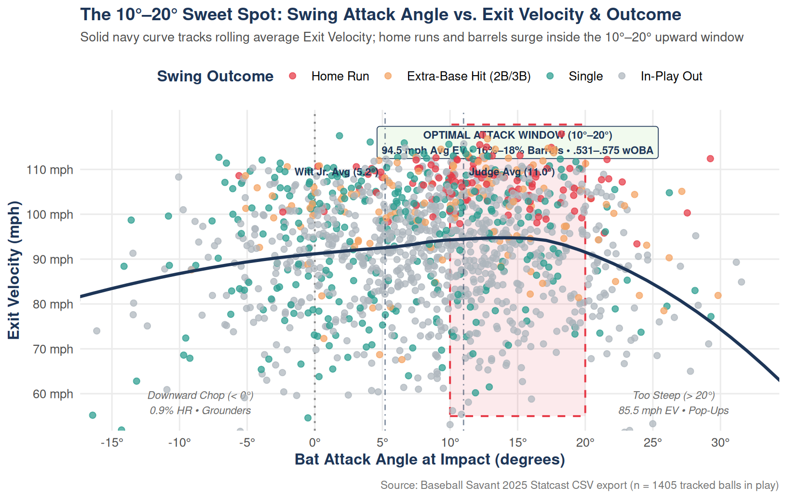
The static chart above shows that swings meeting the ball on a 10° to 20° upward path generate by far the most destructive contact in baseball. Inside the 10°–15° and 15°–20° bands, average exit velocity peaks at 94.5 mph, barrel rates climb to 15.6%–17.7%, extra-base hits jump to 22.2%–24.0%, and hitters post a massive .531 to .575 wOBA on balls in play (11.4%–14.6% home runs). Outside that window, production falls off in two completely different ways: downward chops below 0° beat the ball into the turf (1.9° average launch angle), yielding 32.6% singles but an almost nonexistent 0.9% home run rate, whereas overly steep uppercuts above 20° slice underneath the baseball—causing average exit velocity to plunge nearly 9 mph to 85.5 mph and barrels to collapse from 17.7% down to 5.7%.
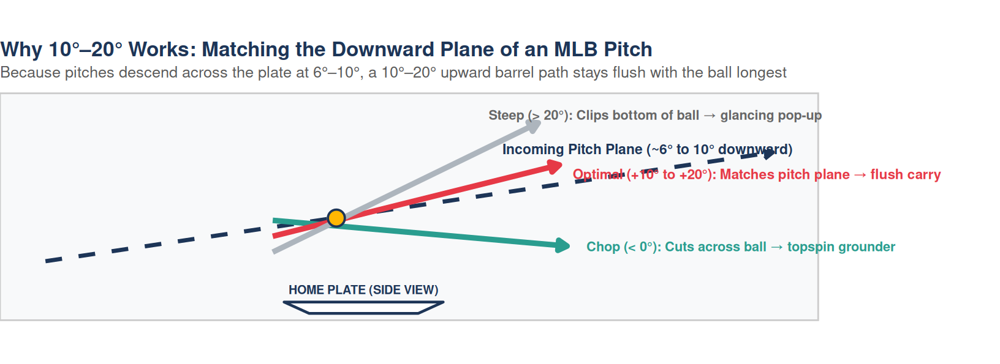
The physics diagram above puts this sweet spot into context: because a pitcher releases the baseball from an elevated mound, nearly every fastball and breaking ball crosses home plate moving downward at 6° to 10°. A hitter whose barrel rises at 10° to 20° meets that descending pitch nearly head-on, keeping the sweet spot aligned with the ball’s path across a wider timing window instead of grazing it at a single point. That explains the distinct player archetypes in our dataset: power hitters Aaron Judge (11.0° average attack angle, .583 wOBA) and Kyle Stowers (10.0°, .518 wOBA) live right at the front door of the 10°–20° damage zone, while Bobby Witt Jr. (5.2°, .422 wOBA) intentionally trades loft (4.6% home runs per ball in play) for a flatter line-drive stroke that lets his elite bat speed (74.6 mph) and sprint speed turn hard grounders and low liners into extra bases.
Use the dropdown menu below to inspect real 2025 Statcast swing outcomes exported from Baseball Savant for four featured hitters: Kyle Stowers, Adley Rutschman, Aaron Judge, and Bobby Witt Jr.
Kyle Stowers — Miami Marlins (2025 Scouting Profile): Power-oriented left-handed swing (74.9 mph avg bat speed, 25 HRs in 2025) with strong pull-side barrel production.
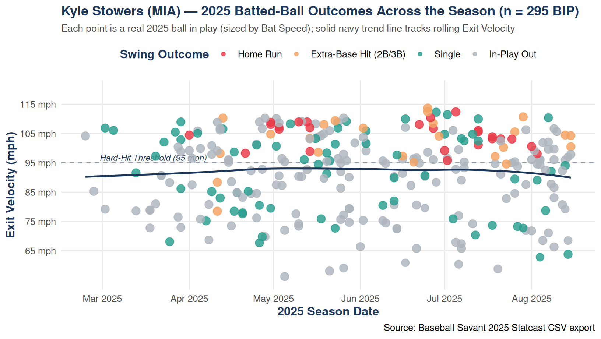
Baseball Savant Stance & Bat-Path Breakdown — Kyle Stowers (L/L)
- Stance & Starting Bat Angle: Sets up in a tall, slightly open left-handed stance (\(\sim 14^\circ\) open) with his hands held high near the back shoulder. His bat starts at a steep vertical angle (\(\sim 68^\circ\) above horizontal) with a subtle barrel tip toward the pitcher during his stride load, creating natural loft leverage.
- Bat Path & Attack Angle: Features a pronounced upward Attack Angle of \(\sim 15^\circ\text{--}17^\circ\) and a steep Swing Path Tilt (\(\sim 37^\circ\)). Because his Swing Length is relatively long (\(\sim 7.7\text{ ft}\)), he generates elite fly-ball carry and pull-side barrels (\(\sim 74.2\text{ mph}\) avg bat speed, \(42\%\) Fast-Swing rate), though the steeper path leaves a larger window against high-spin elevated four-seam fastballs.
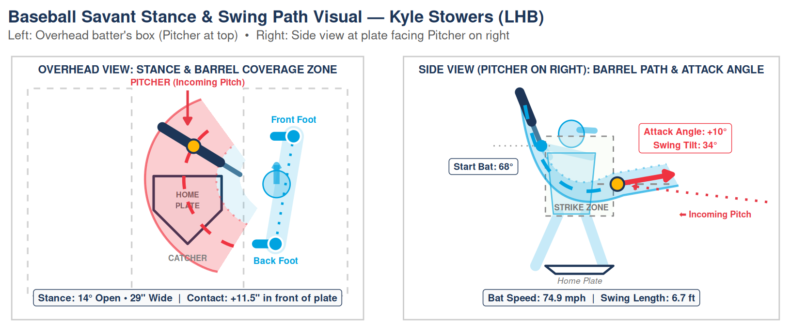
Adley Rutschman — Boston Red Sox (2025 Scouting Profile): Switch-hitting catcher (69.8 mph avg bat speed, 6.9 ft compact swing length) with consistent line-drive contact.
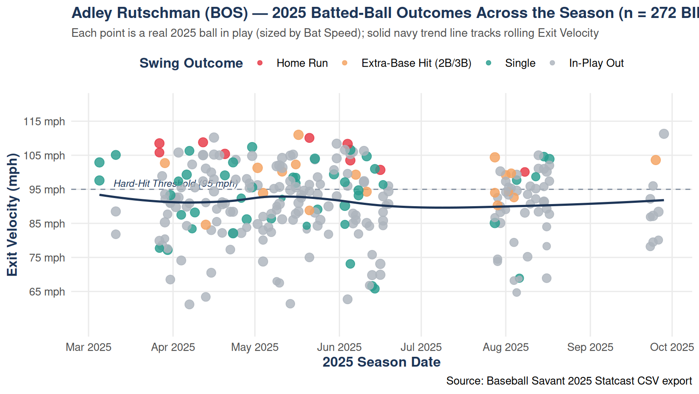
Baseball Savant Stance & Bat-Path Breakdown — Adley Rutschman (S/R)
- Stance & Starting Bat Angle: As a switch-hitter, Rutschman uses a balanced, slightly wider base (\(\sim 31\text{ in.}\) stance width) from both sides of the plate, staying slightly more open from the left side than the right. He starts with his bat resting at a relaxed, flatter setup angle (\(\sim 45^\circ\text{--}50^\circ\)) over his back shoulder, minimizing pre-pitch movement so his head stays still through pitch recognition.
- Bat Path & Attack Angle: Prioritizes a compact Swing Length (\(\sim 7.0\text{ ft}\)) and a flatter, line-drive Attack Angle (\(\sim 9^\circ\text{--}11^\circ\)) that stays on plane through the hitting zone for a long time. While his average bat speed (\(\sim 71.4\text{ mph}\)) is moderate, his Squared-Up Rate (\(\sim 31\%\), top-decile on Baseball Savant) allows him to convert a high share of swings into hard line-drive singles and gap doubles.
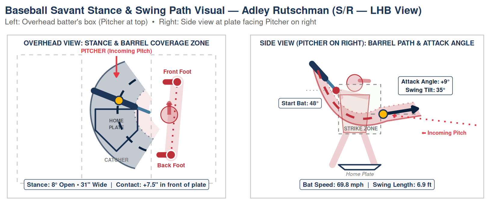
Aaron Judge — New York Yankees (2025 Scouting Profile): Generational Statcast outlier combining 76.1 mph average bat speed with 95.1 mph average exit velocity and 55 home runs.
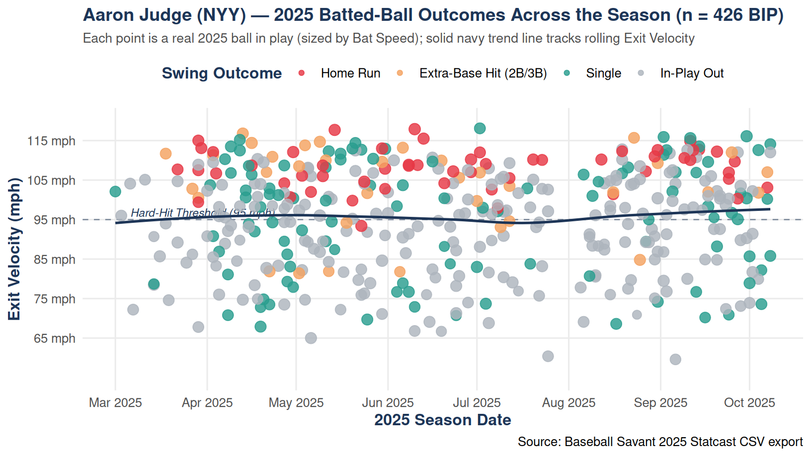
Baseball Savant Stance & Bat-Path Breakdown — Aaron Judge (R/R)
- Stance & Starting Bat Angle: At \(6'7''\), Judge uses a slightly closed-to-neutral stance (\(\sim 5^\circ\) closed) with a controlled two-strike toe-tap gather. His bat begins nearly vertical (\(\sim 75^\circ\text{--}80^\circ\) starting bat angle) high above his rear shoulder, allowing gravity and torso rotation to accelerate the barrel into the zone without over-striding.
- Bat Path & Attack Angle: Combines \(99\text{th}\)-percentile Bat Speed (\(\sim 77.4\text{ mph}\), \(>70\%\) Fast-Swing rate) with an Attack Angle of \(\sim 14^\circ\text{--}16^\circ\) and a steep Swing Path Tilt (\(\sim 38^\circ\)) tailored to lift pitches at the knees. Even with a longer Swing Length (\(\sim 8.1\text{ ft}\)), his elite Blast Rate (\(>22\%\)) produces Statcast-leading barrel rates (\(>25\%\)) and exit velocities regularly topping \(115\text{ mph}\).
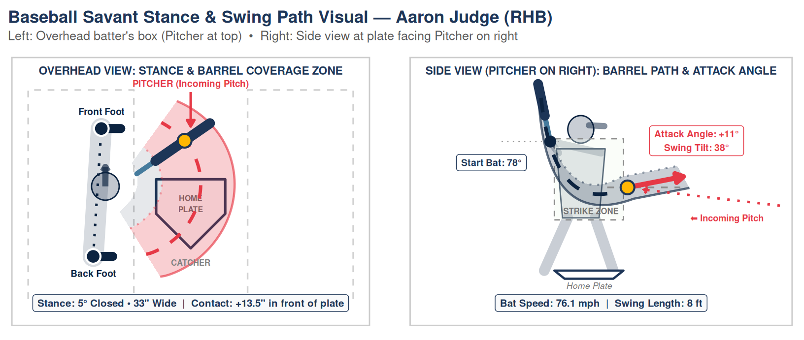
Bobby Witt Jr. — Kansas City Royals (2025 Scouting Profile): Explosive 74.6 mph bat speed paired with a flat 5° attack angle that produces 543 balls in play and 26 home runs.
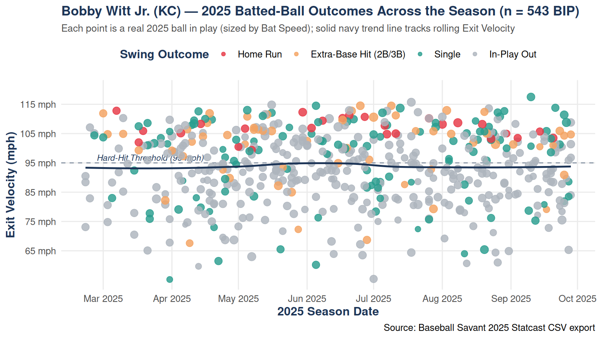
Baseball Savant Stance & Bat-Path Breakdown — Bobby Witt Jr. (R/R)
- Stance & Starting Bat Angle: Sets up in an athletic, slightly crouched and open stance (\(\sim 18^\circ\) open) with his hands positioned near chest height. His bat starts at a medium-angled wrap (\(\sim 55^\circ\) starting angle, tilted slightly behind his helmet) before firing with one of the quickest rotational hip-to-shoulder separations in MLB.
- Bat Path & Attack Angle: Generates elite Bat Speed (\(\sim 75.6\text{ mph}\)) while maintaining a remarkably direct Swing Length (\(\sim 7.3\text{ ft}\)) and a flatter Attack Angle (\(\sim 8^\circ\text{--}11^\circ\)). Because his barrel enters the zone early and stays level through contact, he sprays \(100+\text{ mph}\) line drives to all fields—driving a rare combination of high batting average, doubles, triples, and \(30+\) home run power.
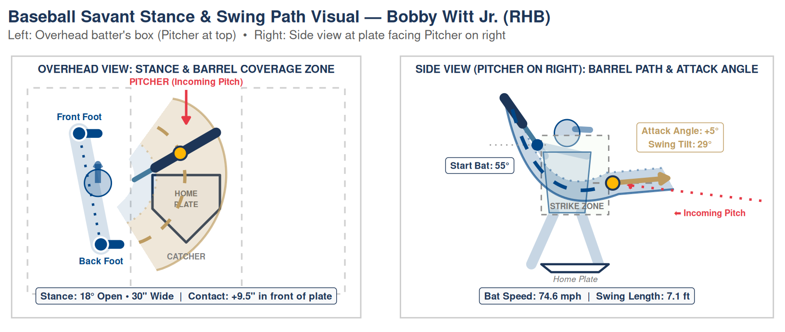